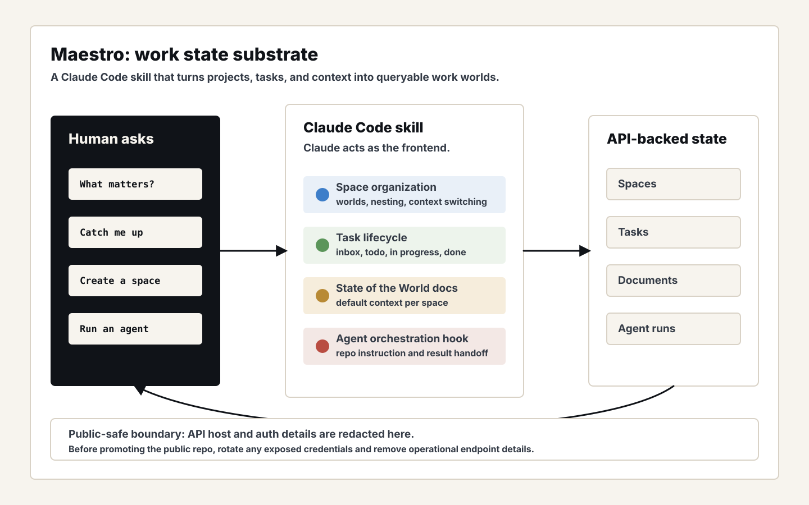
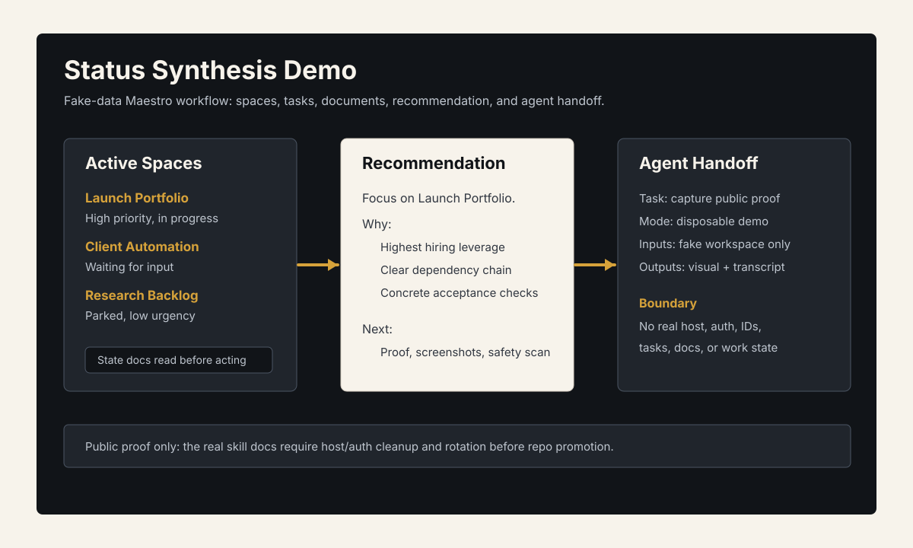

Problem
People do not work in a flat task list. They switch between worlds: projects, clients, ideas, chores, and active workstreams. A useful agent needs to know which world it is in, what is active there, what is merely mentioned, and what should be surfaced next.
What I Built
Maestro packages that model as a Claude Code skill. The public repo defines spaces, tasks, documents, State of the World context, status synthesis, context switching, and an agent-run hook for triggering autonomous work against a repository.
- Space modelContexts are treated as worlds that can nest and carry their own documents.
- State synthesisClaude reads task and document state, then answers what matters right now.
- Agent handoffWork can graduate from task context into an autonomous repo instruction.


Technical Decisions
- Model projects as spaces rather than forcing every context into a generic task list.
- Use documents as the durable memory layer for each space.
- Teach the agent to distinguish active work from merely mentioned ideas.
- Expose the system through a skill interface so Claude becomes the operating surface.
What This Proves
Maestro shows the headless side of agent tooling: not just executing tasks, but organizing context, priorities, documents, and handoffs so an agent can help across multiple work worlds.
Public Evidence
- Public repo verified through GitHub API:
gorkamolero/maestro. - README describes spaces, tasks, documents, and State of the World context.
- Skill tree includes API, reference, task-management, and space-organization docs.
- Fake-data status synthesis visual and transcript added.
- Local state database existence verified, but kept private and unopened.
- Live URL audit on 2026-07-01 found a stale GitHub homepage, a default API deployment, and an untrusted public app-shell alias; none is linked as proof yet.
- Proof note — available on request.
- Fake demo transcript — available on request.
Security Boundary
- Do not promote this repo until auth and endpoint details in public docs are removed or rotated.
- No token, host, user data, or live work-state content is included in this portfolio page.
- The local state database is not copied, queried, screenshotted, or summarized; use a disposable export for any future live demo.